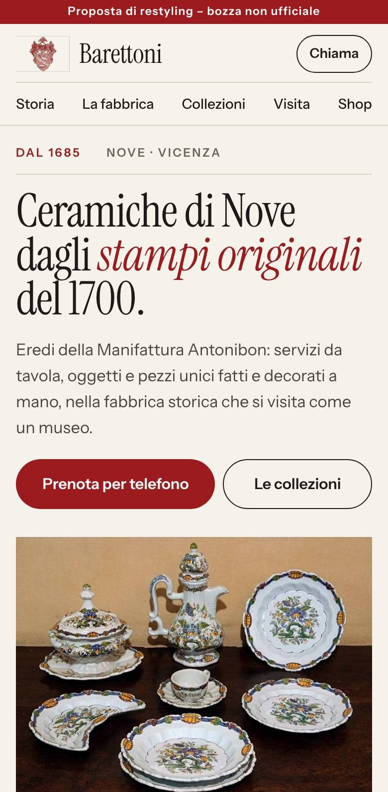
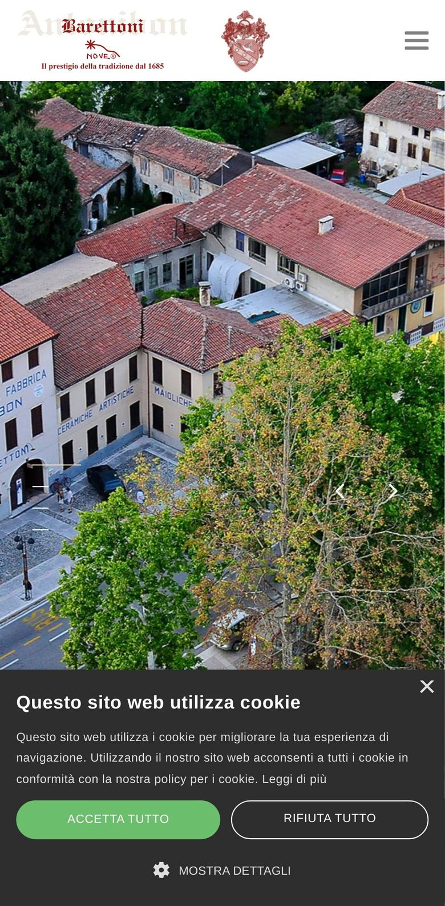
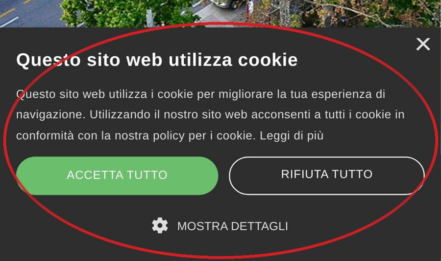
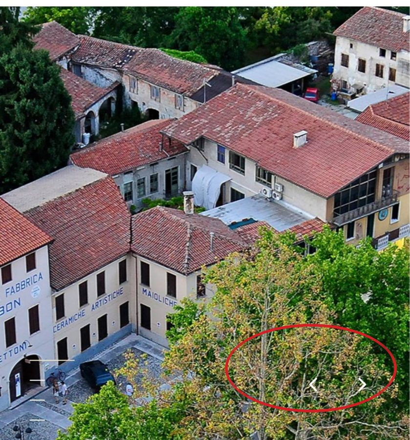
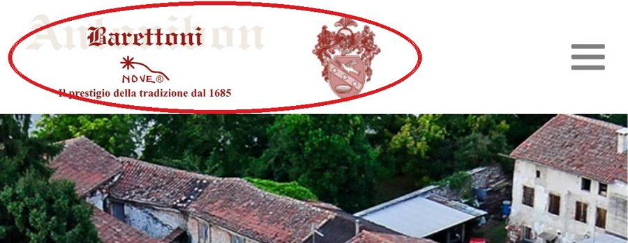

La prima schermata che vede chi apre barettoni.com dal telefono, prima e dopo. Trascinate il cursore.


Misurato su un telefono Pixel 7, prima schermata senza scorrere.
Su telefono il banner “Questo sito web utilizza cookie” copre circa un quarto della prima schermata (26% misurato), con due grandi pulsanti prima ancora di sapere cosa fate.

La prima schermata è solo una foto aerea che scorre, con le frecce del carosello: non c’è un titolo che dica chi siete, né un modo per prenotare la visita. Il numero di telefono, nel codice della pagina, non è un link: dal telefono non si può toccare per chiamare.

In alto, “Barettoni” è sovrapposto a una grande scritta “Antonibon” sbiadita e il motto “Il prestigio della tradizione dal 1685” diventa minuscolo: su schermo piccolo il marchio storico perde forza.

Sito attuale: misurato il 20 ottobre 2026 da telefono (Chrome, Pixel 7, cache vuota). Proposta: misurata in locale con le stesse foto.